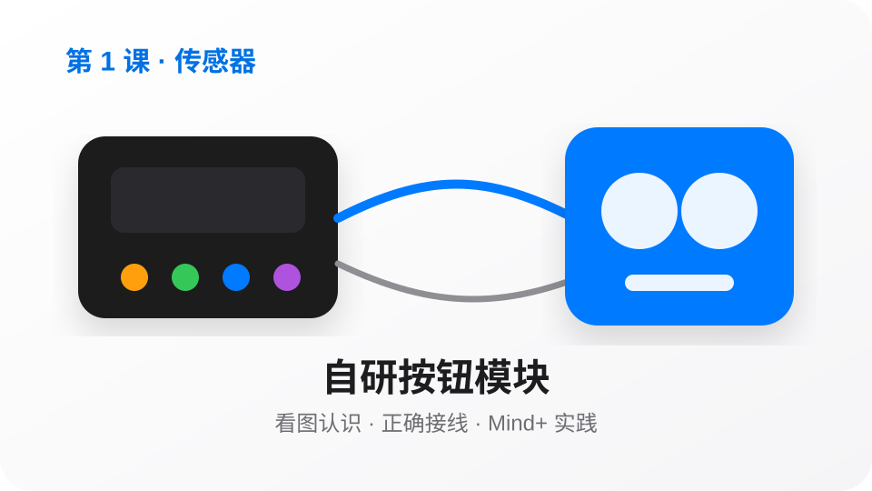
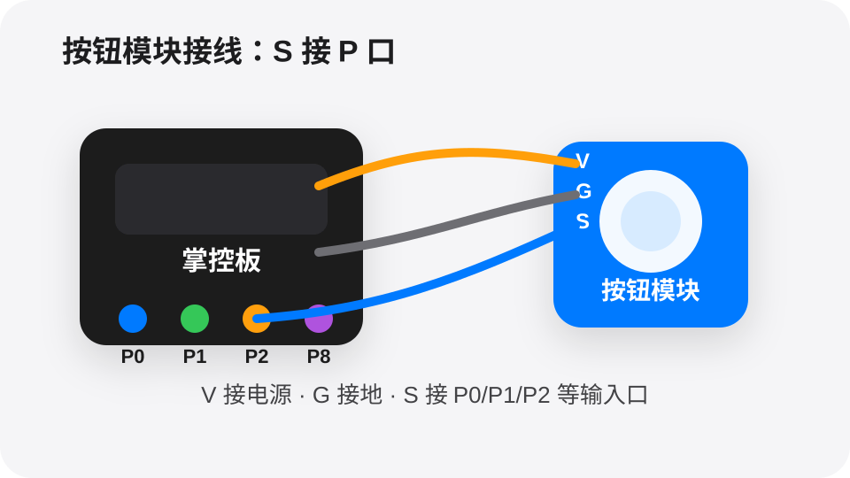
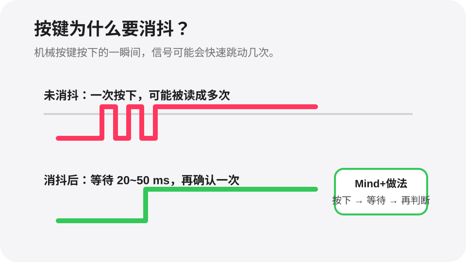

按一下按钮，让屏幕显示「你好」。
步骤：先完成接线或软件准备，再用 Mind+ 读取/控制模块，最后加入条件判断并观察结果。
接线答案
按钮 V 接掌控板 3V3 或 5V（按模块标识）
按钮 G 接掌控板 GND
按钮 S 接掌控板 P0
Mind+可视化程序答案
当掌控板启动
重复执行
如果 数字读取 P0 = 1
等待 0.03 秒（按键消抖）
如果 数字读取 P0 仍然 = 1
清空屏幕
在屏幕第 1 行显示「你好」
等待 直到 数字读取 P0 = 0（防止一直重复触发）
今天我们学习一个能让作品更聪明的小模块。目标不是背知识，而是做出能看见、会判断、能行动的小作品。

电梯按钮、门铃、游戏手柄都在用按钮。今天我们要让掌控板听懂「我按下了」这个动作。
很久以前，人们就用开关控制灯和机器。按钮是最容易理解的输入：按下去，机器就知道有人发出了命令。
按钮就像给掌控板的「举手信号」。按下时，程序可以开始一件事。
注意：这里不要写成“输入口”就结束，要明确告诉学生：按钮的 S 信号线接到掌控板的 P 口。
先接 V 和 G，再把 S 接到一个 P 口。程序里读取哪个 P 口，线就要接到哪个 P 口。

按钮内部像一座小桥。按下时电路接通，掌控板从 P 口读到一个数字信号；松开时电路断开，P 口读到另一个数字信号。我们用这个 0/1 变化来判断“有没有按下”。

机械按键在刚按下或刚松开时，金属触点可能会轻轻弹跳。掌控板读得很快，就可能把一次按下误认为很多次。
步骤：先完成接线或软件准备，再用 Mind+ 读取/控制模块，最后加入条件判断并观察结果。
步骤：先完成接线或软件准备，再用 Mind+ 读取/控制模块，最后加入条件判断并观察结果。
步骤：先完成接线或软件准备，再用 Mind+ 读取/控制模块，最后加入条件判断并观察结果。
挑战：把按钮升级成“短按/长按”两种控制。短按让屏幕显示「你好」，长按 2 秒让 RGB 灯闪烁三次。想一想：长按时需要用到等待和计时吗？